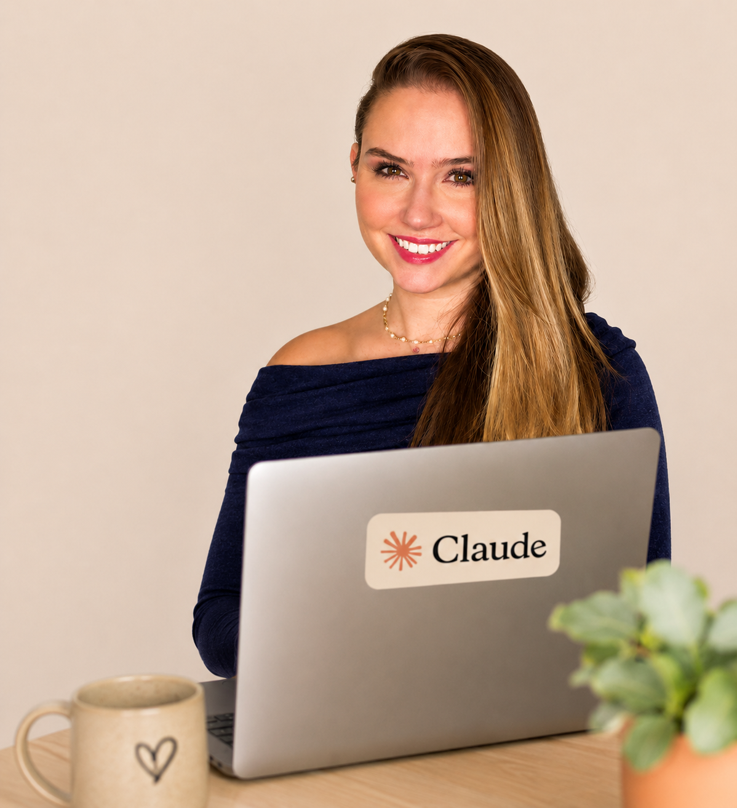
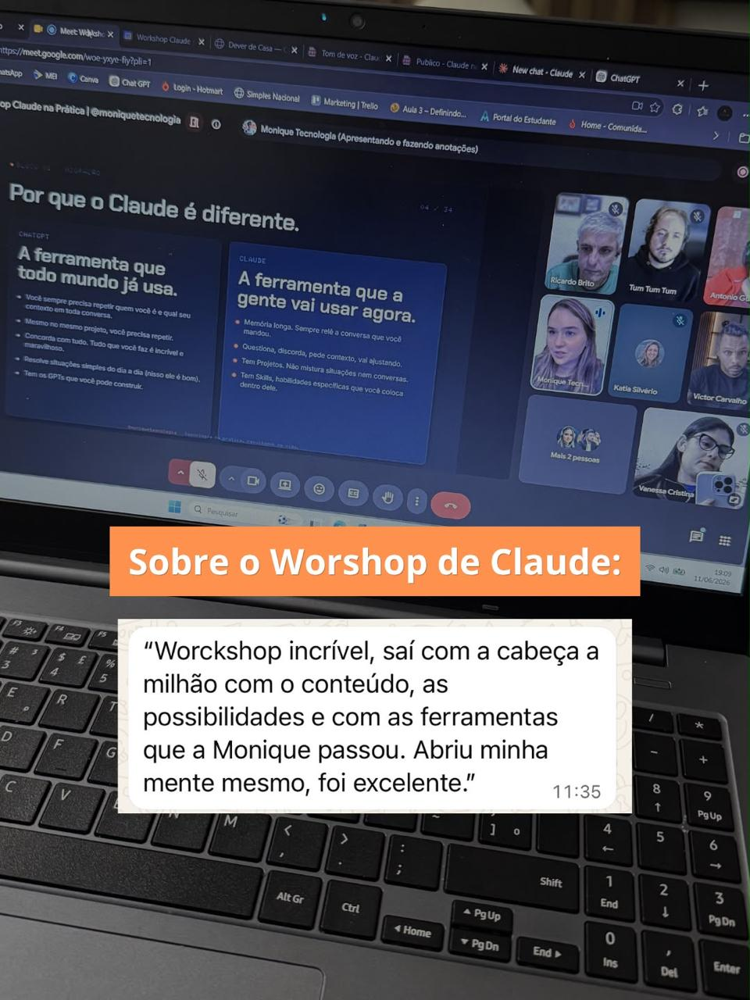
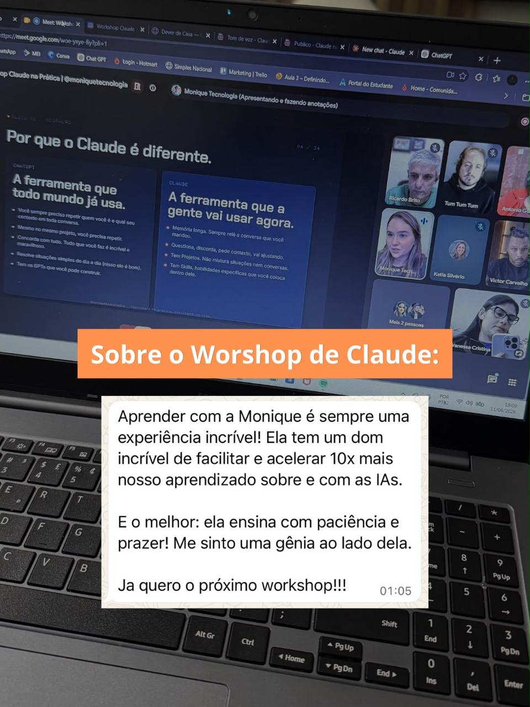
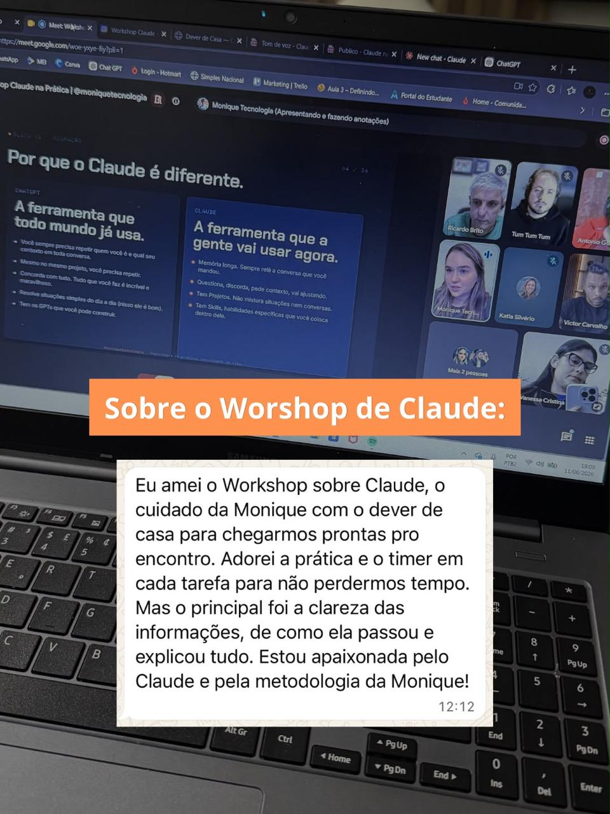
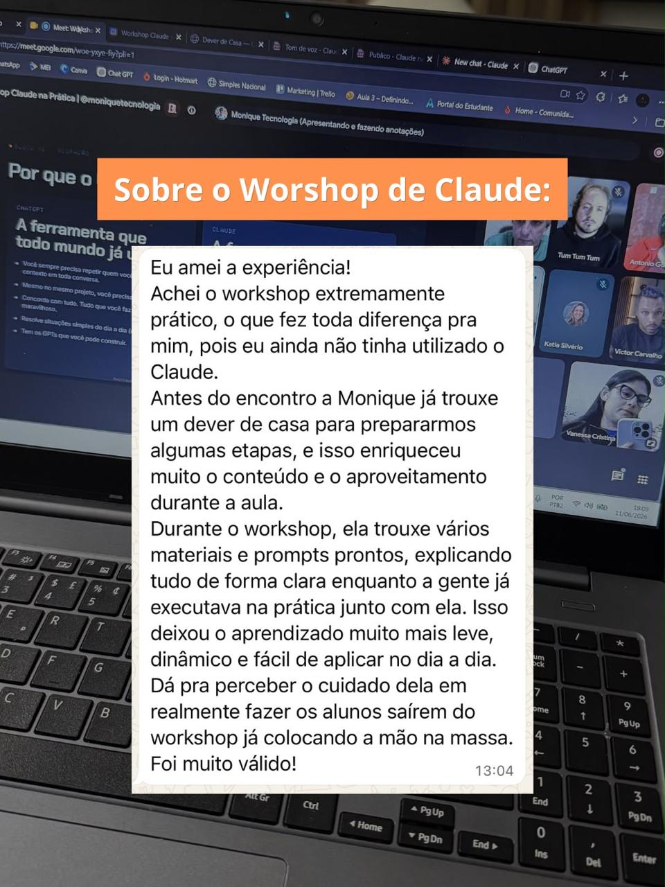

Você já salvou dica, viu vídeo, tentou sozinha e travou. No Claude na Prática, a Monique te guia ao vivo para você sair com o Claude configurado, um Projeto montado e a sensação de: "agora eu sei por onde começar".
Vagas limitadas — as turmas ao vivo enchem rápido.
Com base no tom direto e acolhedor da sua marca, público feminino 30-45...
Caption: "Você sabia que dá pra resolver isso em 5 min?..." ✓
Você para de salvar dica.
E começa a usar de verdade.
Você para de se culpar.
E entende que o problema nunca foi você.
Você para de fazer tudo manual.
E ganha uma IA trabalhando do seu lado.
Você para de dizer "um dia eu aprendo".
E sai da aula pensando: "eu fiz".
Por que tanta dica de IA te deixa mais travada, e não mais preparada.
A diferença entre o ChatGPT e o Claude, e por que o Claude entende a sua rotina.
Como montar seu primeiro Projeto sem depender de tutorial perdido.
Como transformar uma ideia em material pronto dentro da própria aula.
Como deixar o Claude trabalhando com você no navegador e no WhatsApp.
O 1º lote está ativo por R$29,90. Os próximos lotes entram conforme as vagas enchem.
Lote de abertura — primeiras vagas com o melhor investimento.
Vagas intermediárias — mesma experiência completa.
Últimas vagas antes do encerramento das inscrições.

Monique não ensina tecnologia como quem quer parecer difícil.
Ela passou 15 anos em empresas grandes, lidando com treinamento, mudança e gente real tentando usar ferramentas novas. Trabalhou em ambientes como BRF, SC Johnson e UOL e implementou tecnologia para milhares de pessoas.
Ela viu de perto uma verdade que quase ninguém fala: o problema nunca é só a ferramenta. É o medo. A confusão. A falta de alguém que traduza.
E é isso que ela faz. Monique pega o que parece complicado e mostra de um jeito simples, humano e aplicável.
Você não precisa dominar IA inteira para começar a usar.
Você não é lenta para tecnologia. Nunca foi.
Você só tentou aprender sozinha por tempo demais.
Dica solta não substitui caminho guiado. Nunca vai substituir.
Um workshop ao vivo de 3 horas.
Você entra com dúvida. Faz junto com a Monique. E sai com o Claude configurado para começar a usar no seu dia a dia.
Você entende a diferença entre ChatGPT e Claude, ativa a memória, migra o que já tem e monta seu primeiro Projeto.
Você cria um artefato dentro do Projeto (apresentação, material, documento) e salva sua skill de tom de voz, para a IA escrever do seu jeito.
Você gera uma apresentação no Claude Design e instala a extensão do Chrome para usar o Claude no navegador, no Instagram, no WhatsApp.
Para rever cada etapa com calma e repetir no seu ritmo.
GPTs prontos de tom de voz, estrutura do negócio e perfil de cliente. Você chega na aula preparada.
Os prompts exatos de cada etapa, organizados. Sai com tudo na mão para reaplicar.
Porque a IA não vai ficar menos presente. Vai ficar mais.
Porque seu tempo não volta — cada tarefa manual hoje é uma hora que não volta amanhã.
Porque continuar no manual custa mais do que parece: tempo, energia e a sensação de ficar para trás.
Porque o primeiro passo certo vale mais que mais uma semana salvando vídeo que você nunca vai ver.
Para quem já tentou aprender IA e travou.
Para quem usa o ChatGPT no básico e sente que poderia fazer muito mais.
Para quem quer usar tecnologia sem depender de filho, colega ou tutorial.
Para quem prefere fazer junto em vez de assistir e tentar sozinha depois.
Para quem quer dar o primeiro passo na IA com alguém do lado.
Não é para quem quer programação avançada ou uma aula teórica para assistir sem aplicar.
Você não vai aprender IA ouvindo.
Você vai aprender fazendo.
Com a Monique guiando cada etapa, até a ferramenta sair do campo da teoria e virar algo funcionando na sua mão.




Workshop ao vivo de 3 horas
Aplicação guiada com a Monique
Projeto no Claude montado ao vivo
Artefato real criado na aula
Sua skill de tom de voz salva
Apresentação no Claude Design
Extensão do Chrome instalada
Gravação completa por 1 mês
Dever de casa com 3 GPTs
Todos os prompts da aula
Investimento atual
Oferta ativa do 1º lote. Os próximos lotes sobem conforme as vagas enchem.
Quero entrar no Claude na PráticaSe participar e sentir que não foi para você, solicite a devolução dentro do prazo. Simples assim.
Sim. A aula foi feita exatamente para quem está começando e precisa de linguagem simples, sem termo técnico.
A Monique recomenda usar o Claude pago para aproveitar melhor as funções. Você vai ser orientada sobre isso antes da aula.
Sim. A aula é passo a passo, com pausas para você fazer junto. Quando travar, a Monique te ajuda na hora.
Porque aqui você não fica sozinha tentando depois. Você aplica durante a aula, com alguém do lado.
Não, e tudo bem. Você vai sair com o primeiro uso real funcionando. Esse é o começo certo.
Você recebe a gravação completa por 1 mês para rever e repetir cada etapa no seu ritmo.
Tem. São 7 dias de garantia. Participou e sentiu que não foi para você, é só pedir a devolução dentro do prazo.
Em 3 horas com a Monique, você sai com o Claude configurado e a sensação de "eu fiz".
Quero começar pelo caminho certo